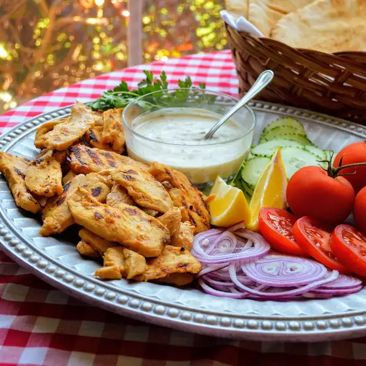

Yogurt-Marinated Chicken Shawarma

Description
The most delicious shawarma chicken you'll ever eat!
Serve with pita bread, tomato and/or cucumber slices, tahini, or garlic sauce. Also great atop fattoush!
Ingredients
- ¼ cup plain yogurt
- ¼ cup lemon juice
- ¼ cup canola oil
- 3 tablespoons white vinegar
- 4 cloves garlic, crushed
- 1 teaspoon salt
- 1 teaspoon smoked paprika
- 1 teaspoon ground cumin
- 1 teaspoon dried oregano
- 2 pounds boneless, skinless chicken breasts, sliced
- 2 tablespoons canola oil, or as needed
Steps
- Combine yogurt, lemon juice, 1/4 cup oil, vinegar, garlic, salt, paprika, cumin, and oregano in a large glass or ceramic bowl; mix well. Add chicken and toss to evenly coat.
Cover the bowl with plastic wrap and marinate in the refrigerator for 8 hours to overnight.
- Remove chicken from the marinade and shake off excess. Discard the remaining marinade.
- Heat 2 tablespoons oil in a large skillet over medium-high heat. Cook chicken in hot oil in batches until tender and browned, about 5 minutes per batch.
An instant-read thermometer inserted into the center should read at least 165 degrees F (74 degrees C).